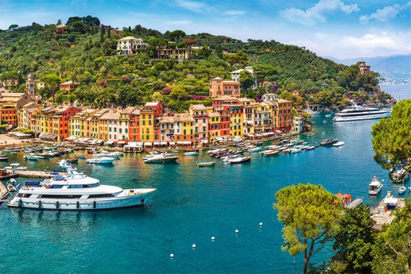
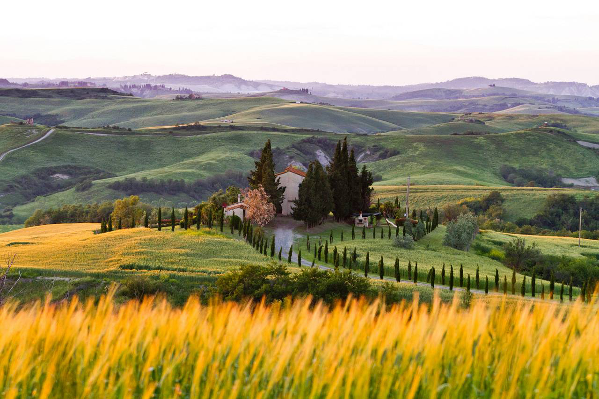
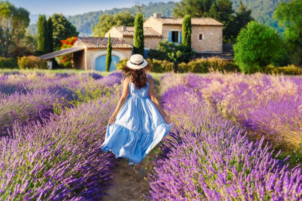
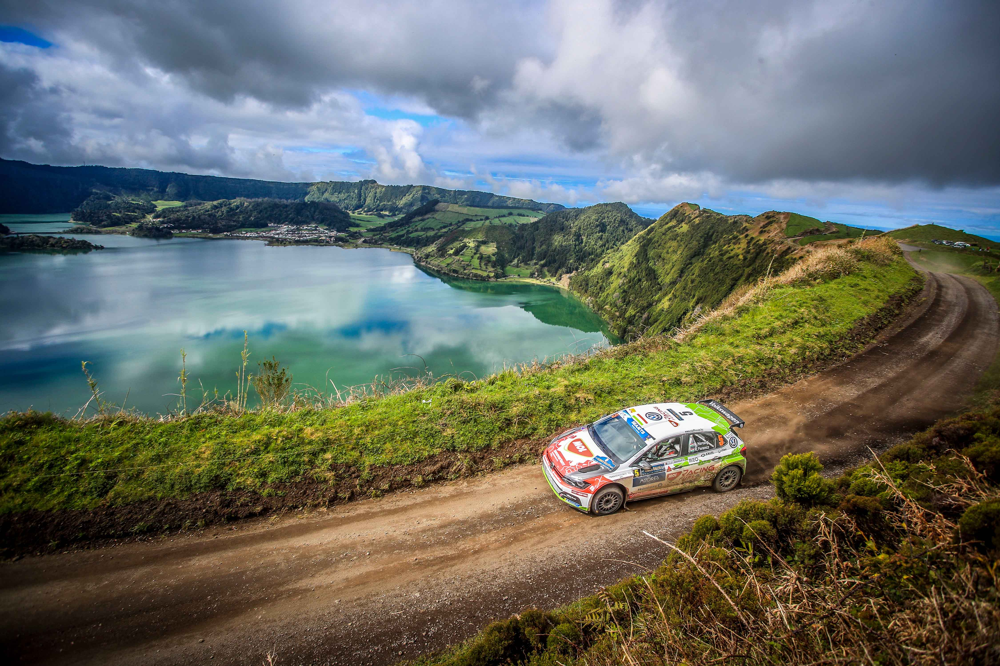
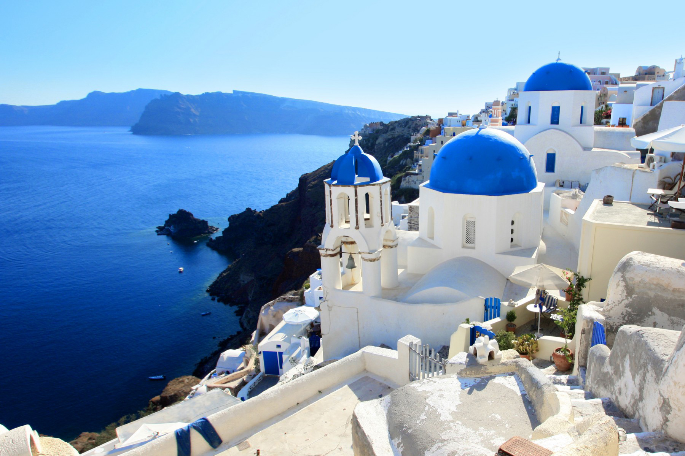
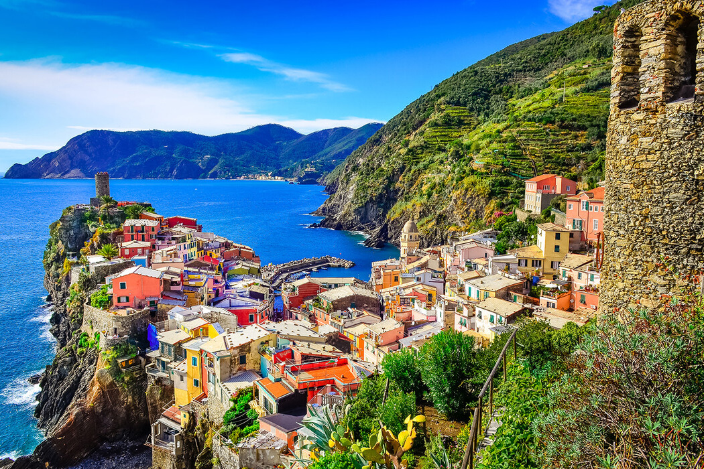
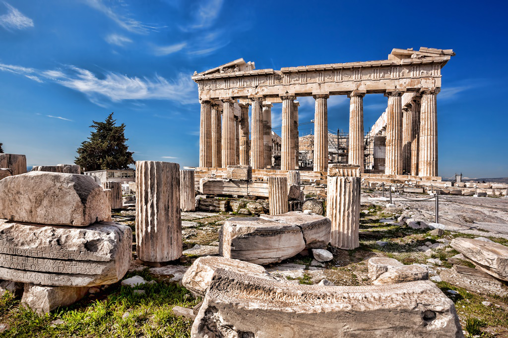
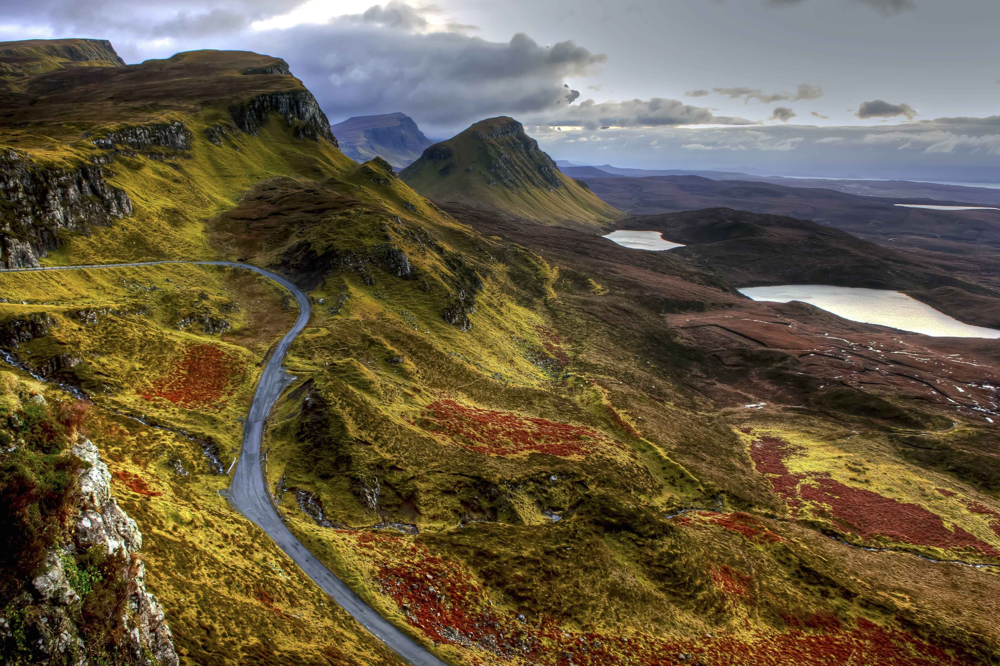

Nove TOP destinacije u ponudi.

Italija, službeno Talijanska Republika, država u južnoj Europi. Stari hrvatski izvori ju zovu i Talijanska. Italija je puna sadržaja kao niti jedna druga zemlja na svijetu. Mjesto je to puno kontrasta, šarma, kulture, zanimljivih okusa, pitoresknih krajolika i prizora koji su vječna inspiracija putnicima. Sastoji se od Apeninskog poluotoka i dva velika otoka na Sredozemnom moru, Sicilije i Sardinije.

Opisana u brojnim knjigama, opjevana u brojnim pjesmama, oslikana od strane brojnih slikara... kolijevka umjetnosti, gastronomije, enologije, regija koja nepresušno inspirira generacije umjetnika, filozofa, arhitekata, slučajnih prolaznika... dopustite si da i vas zanese i osvoji, bespovratno zavede šarm toskanskih brežuljaka uz mirise chiantia.

Vodimo vas u srce Provanse, tamo gdje snovi postaju stvarnost, gdje sve viđene filmske scene oživljavaju... Putovanje koje će probuditi sva vaša osjetila, natjerati vas da se zaljubite 100 puta dnevno u prekrasne krajolike, očarati vas šarmom kojim je Provansa prožeta u cjelini... Doživite s nama jedinstvena polja lavande, fantastična francuska vina, nenadmašne gastronomske okuse, provansalske začine, arhitekturu koja će vas ostaviti bez daha i neponovljivi šarm gradića koji su inspirirali brojne umjetnike, redatelje, skladatelje... saznajte zašto!

Devet otoka usred Atlantika bogati su romantičnom poviješću, legendama i izvornom, prirodnom ljepotom. Vulkansko porijeklo vidljivo je posvuda – duboki krateri kaldera najizrazitije su prirodno obilježje Azora. Sa svojim visokim liticama i selima kao prošivenima ljupkim farmama, Azori su nestvarno čarobno otočje u nestalnom Atlantiku.

Upoznajte kolijevku ljudske civilizacije i otkrijte najljepše otoke istočnog Mediterana, mjesto od kuda potječu legende o grčkim bogovima te doživite svoj grčki mit!

Nitko nije ostao ravnodušan živopisnim kućama pastelnih boja, primorskom šarmu i mrežom puteljaka za šetnju te litica za penjanje koje povezuju mjestašca vijugavim putevima ispresijecanim terasastim brdima vinograda i maslinika.

Atena je glavni grad Grčke i jedan od najpoznatijih gradova u svijetu. Antička Atena je bila moćan grad-država i poznati centar edukacije i znanosti. Nazvana je po božici iz grčke mitologije, Ateni. Grad se često naziva kolijevkom zapadne civilizacije zbog svojih kulturnih doprinosa tijekom 5. i 4. stoljeća prije Krista.

Škotska je jedna od 4 nacije koje tvore Veliko Kraljevstvo (druge 3 su Engleska, Wales i Sjeverna Irska). Škotska je smještena na sjeveru otoka Velike Britanije. Povijest ove zemlje seže do 1. stoljeća keda Rimljani osvajaju Veliku Britaniju. Konačno ime dobiva u 5. i 6. stolječu prema Skotima – plemenu Celtika. Škotska je politički uređena kao parlamentarna demokracija sa parlamentom u Edinburgu, dio je Europske Unije što znači da se mnoge odluke ipak donose u Europskom Parlamentu u Brusselsu.